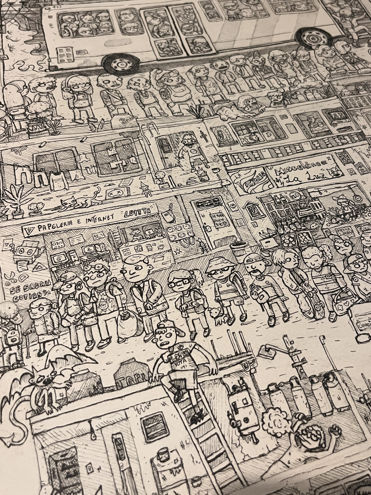
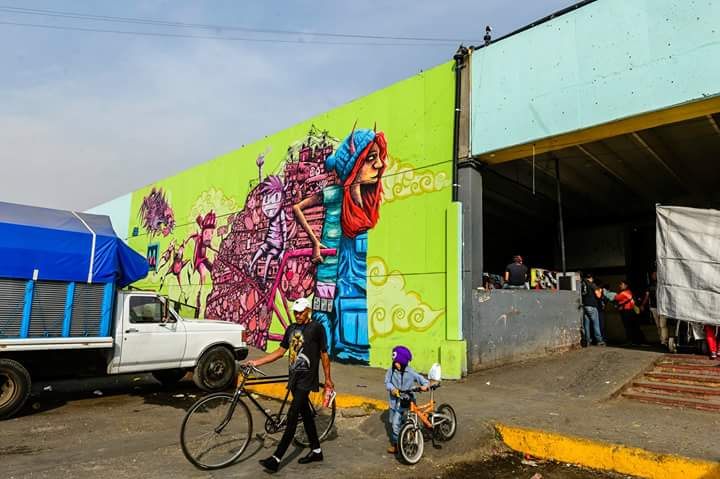
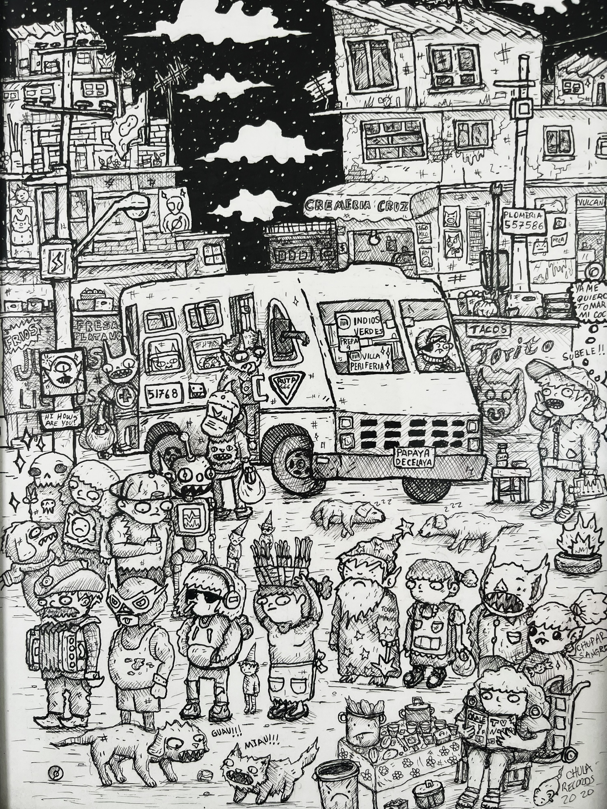
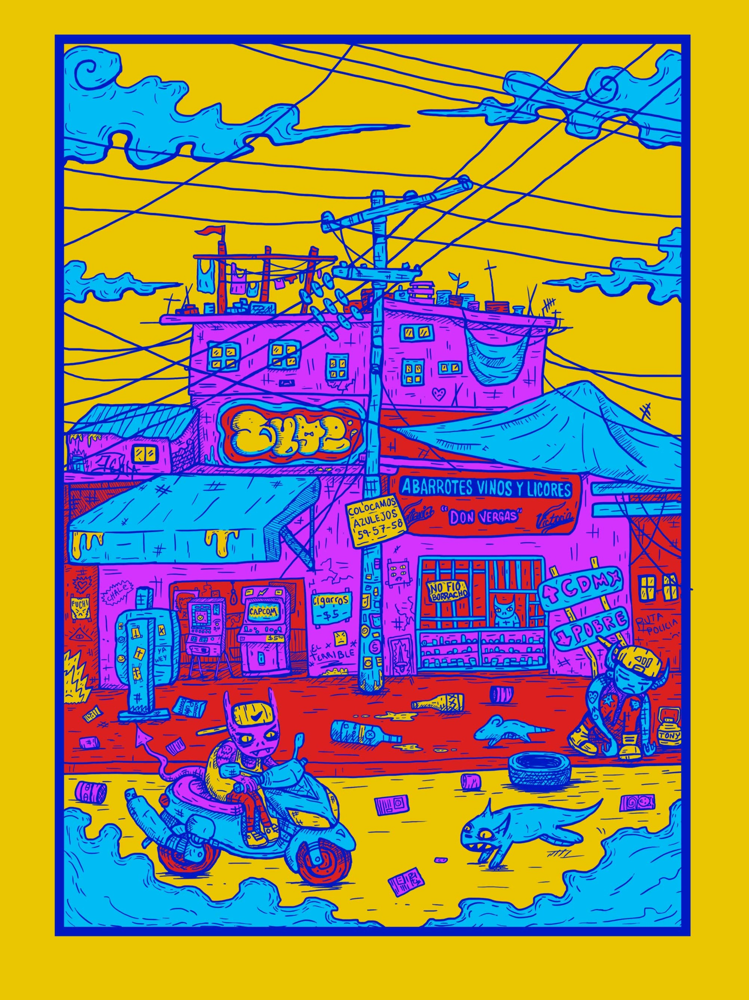
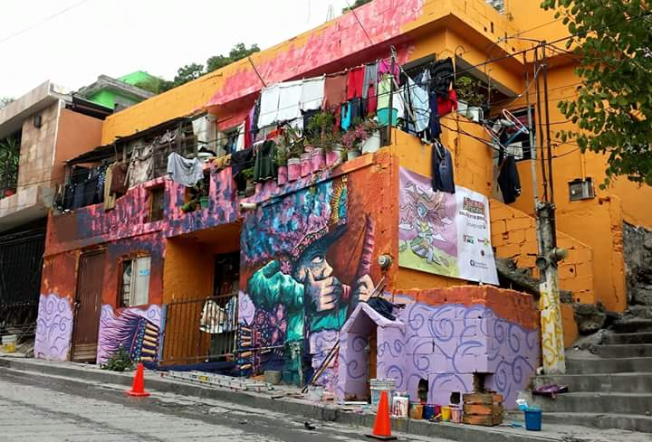

Obra Reciente & Selección Gráfica
Haz clic en cualquier pieza para ampliar y consultar detalle técnico.

La Cola
Estilógrafos sobre papel de algodón • 2026

Oxxo
Tinta y color digital • 2024

Diablera
Acrílico sobre muro • 2017 - 2018

Paradero
Tinta • 2023

Surtido
Tinta • 2023

Zapateria
Tinta • 2024

Esquina 3
Color digital 2020
Pieza seleccionada Catálogo de Ilustración Latinoamericana 2020

Matachin
Acrílico sobre muro • 2018